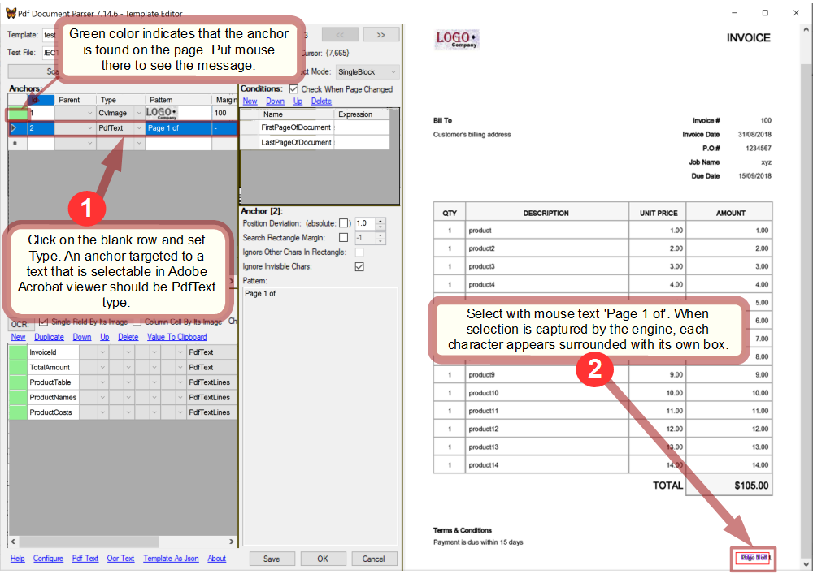
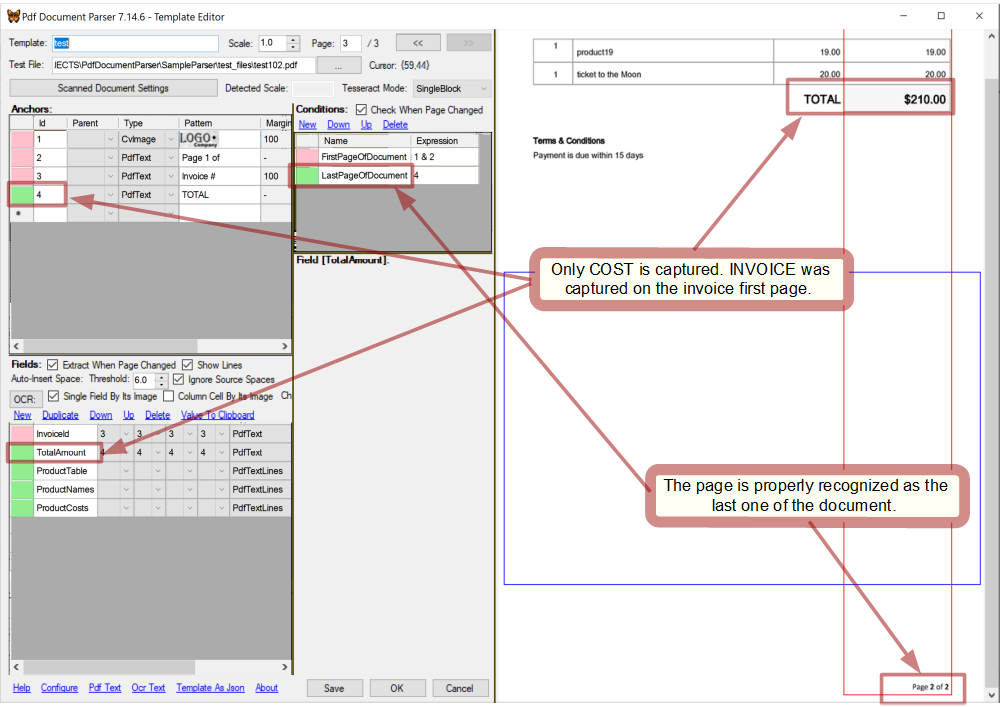
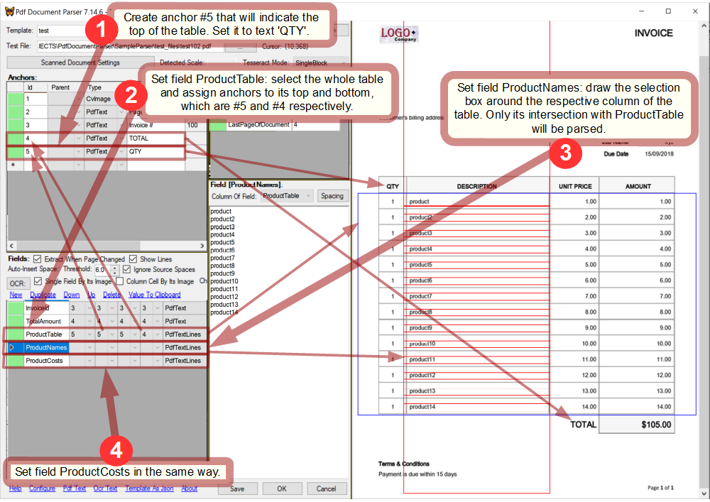
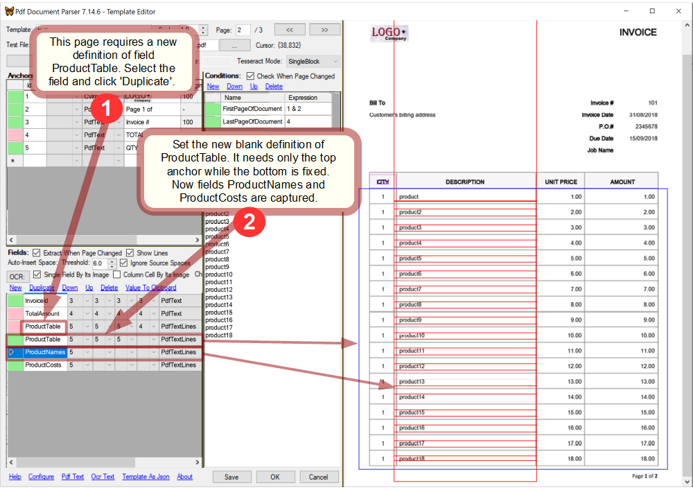

Overview
PdfDocumentParser is a .NET tool designed for parsing PDF documents that conform to predictable graphical layouts - such as reports, forms, tickets, invoices and the like. PdfDocumentParser was formed as DLL to be incorporated into desktop applications, thus, drastically reducing efforts of building PDF parsers.
PdfDocumentParser provides the following facilities:
- Template Editor where parsing templates can be created and debugged in an easy manner;
- Parsing API that allows parsing PDF files in a custom manner with a little effort required;
Approach
The main approach of parsing by PdfDocumentParser is based on finding certain text or image fragments on a PDF page and then extracting text/images located relatively to those fragments.
Within this scope PdfDocumentParser is capable of the following:
- search/extract text represented by PDF entities - intended for native PDF files;
- search/extract text obtained by OCR - intended for scanned PDF files;
- search/compare/extract page fragments as images - intended for either native or scanned PDF files;
Also, PdfDocumentParser allows to check custom conditions on a PDF page to decide which actions should be taken on it.
Developing application
An application based on PdfDocumentParser has to care about the following main aspects:
- provide storage and management of parsing templates;
- allow a user to create and modify templates with Template Editor;
-
implement a custom algorithm of processing PDF files:
- choose a template to be applied on a PDF page;
- process data parsed by the chosen template;
Visual Studio
In Visual Studio:- create your project;
- add PdfDocumentParser project to the solution;
- reference PdfDocumentParser in your project;
- update nuget packages for the solution;
- start developing your parser using PdfDocumentParser API;
Licensing
See the license source.Contact me if you want another license.
*Notice that PdfDocumentParser may use third-party software as command line tools or linked libraries which should be licensed independently.
Source code
Open repositoryDo not use the latest code as is from a branch because it might be under development. Instead, go to releases and download the latest (pre-)release source code.
Getting started
To get the idea of what can be done with PdfDocumentParser and how it is used, review tutorial.Template
A template is intended for parsing documents that comply with the same layout (e.g. reports issued by the same company). It contains information what data should be extracted, where and how.
Obviously, applying a template to documents with layouts different from that it was designed for, brings to incorrect parsing.
Creating and modifying templates is preformed with Template Editor
Anchor
An anchor is a fragment of either text or image captured on a PDF page in order to be searched on any page needed afterwards. An anchor can be used in the following ways:
- fields can be linked to it;
- it can be engaged in conditions;
- other anchors can be linked to it;
Being used does not impose any restriction on an anchor. Thus, an anchor can be used in many ways at the same time.
Anchors are identified by their numbers assigned automatically.
Only the first match on the page is used to locate the anchor. No further match is searched.
Anchor types
Each type is processed by its own very different way, therefore choosing the right type is crucial in successful and robust parsing.
PdfText
This type is used to anchor to text fragments. It is based on the native text presentation inside a PDF file so it can work only with native (not scanned) PDF files. At the same time, it should be chosen whenever possible because it is most robust and fast.
| Parameter | Description |
|---|---|
| Position deviation |
It allows to loose bonds between character boxes in the anchor when for some reason they can shift relatively to each other. It is measured in pixels and must be a positive float number, non-zero even for identical documents because of discrepancy reasoned by internal image re-scaling.
It makes no sense, obviously, when the anchor consists of only 1 character. NOTE: Increasing this parameter might bring to failing to detect the existing anchor because PdfDocumentParser looks for matches with rectangular that contain exactly the anchor's chars and does not contain any more chars (excluding invisible ones which can be ignored). That is, if there are several same chars located on a page close to each other within the deviation distance then the engine can catch one of them while the other one(s) can appear within the match rectangular making thus the match invalid. |
| Position deviation is absolute | If True, position deviation of every character box is measured relatively to the position of the anchor's first character box, otherwise, to position of the previous character box. The latter is looser than the former because in the letter case, deviation can accumulate. | Search rectangle margin | When set, the area where the anchor is searched is restricted by Search rectangle margin that specifies a rectangular area around the anchor's initial rectangle which is the rectangle where the anchor was located on page while creating. Otherwise, the search area is the entire page. It is measured in pixels. It should be used only when it is known definitely that the anchor is always located in a certain part of page. It helps to avoid undesired matching and speed up processing. |
OcrText
This type is used to anchor to OCR'ed text. It should be used only when PdfText does not work which happens on scanned or mixed documents.
It works similarly to PdfText with that difference that character boxes are provided by OCR engine instead of native PDF entities.
In contrast to PdfText, OcrText type does not ensure 100% accuracy and can acceptably work only with images of resolution not less than 300dpi (see PdfPageImageResolution parameter).
| Parameter | Description |
|---|---|
| Position deviation | See PdfText. |
| Position deviation is absolute | See PdfText. | Search rectangle margin | See PdfText. |
| OCR entire page |
NOTE: This switch can completely change parsing. It is because OCR by Tesseract of a larger and a smaller fragments can give different recognition of the same text.
Which is better? OCR of entire page gives sometimes more correct results, sometimes otherwise. But it always takes considerably longer time than OCR of a smaller fragment which is defined by Search rectangle margin. This switch makes sense only if Search rectangle margin is on, otherwise the entire page is OCR'ed anyway. |
CvImage
This type is an image that represents the area selected on PDF page while creating anchor. It can be used on any visible part of either native or scanned PDF page.
For native PDF documents whose appearance has no discrepancy in quality, CvImage type works quite well.
CvImage is based on the OpenCV image template matching.
When anchoring to a text which is presented by image as happens in scanned or mixed documents, there is a choice between CvImage and OcrText types. Which one to choose? If a target image does not change much from document to document and looks the same (no matter how poor its quality is), CvImage is more reliable and fast. However, if a target image has an essential discrepancy in size, contrast, brightness, orientation etc. in documents, OcrText may work better.
| Parameter | Description |
|---|---|
| Threshold | It filteres out CV image matches which are most likely incorrect. Recommended value is 0.7 or higher. |
| Scale deviation | Scanned images usually can deviate in their scaling so that the searched image can appear in different size and so might not be found. To deal with this the pyramid image search is performed. CvImage engine starts from scale 1 and then moves along the scaling pyramid with the Scale Pyramid Step down and up. Scale deviation value defines the minimum and maximum scaling factors to be applied to the template image. E.g. 0.05 means that the template is to be scaled from (1-0.05) to (1+0.05). | Search rectangle margin | See PdfText. |
ImageData
NOTE: this type is obsolete and CvImage should be used instead. Remains for backward compatibility.
This type is an image that represents the area selected on PDF page while creating anchor. It can be used on any visible part of either native or scanned PDF page.
NOTE: even when an image fragment is searched within the same page where it was extracted from, it cannot be found without a non-zero tolerance. It happens because search hashes of a whole page and of a fragment are produced after downsizing them, and then, when restoring images from the hashes, pixel interpolation gives slight deviations from the original images. Those deviations should be overcome with some tolerance.
| Parameter | Description |
|---|---|
| Search rectangle margin | See PdfText. |
| Brightness tolerance | While for native PDF documents it can be 0.1 - 0.2, scanned documents which have brightness discrepancy, may need it higher. A higher tolerance gives a less accuracy. |
| Different pixel number tolerance | While for native PDF documents it can be 0.1 - 0.2, scanned documents which have brightness discrepancy, may need it higher. A higher tolerance gives a less accuracy. |
| Find best match | If True, looks for the match with the least difference, otherwise returns the first match within the tolerance specified. |
Compound anchor
A compound anchor is a chain of successively linked anchors. It is represented by the last anchor in the chain which gives one's position to it. It is used just like a simple anchor.
Compound anchors are used when more conditioned search is required.
A compound anchor is not found when some of its anchors is not found.
A linked anchor is named 'child' of the linking one which is named 'parent'. When an anchor is linked to another anchor, its search area (when it is set to not entire page) becomes related to its parent anchor's position. That means that a parent anchor is searched not until its first match found as done for a stand-alone anchor, but until a match found that satisfies to the child anchor as well.
More specifically, when a child anchor has Search Rectangle Margin set to not entire page, position of its parent anchor, while searching as parent, can differ from position of the very same anchor, while searching stand-alone.
The same consideration is true for child anchors too: an anchor, whose search area is set to not entire page, can change its position after linking to another anchor.
Therefore, NOTE: An anchor acting stand-alone and the same anchor acting as a part of a compound anchor should be considered different anchors because they can have different positions on a page.
Number of anchors in a compound anchor can be any. Though, it should be taken to account that processing time of recursive search performed for a compound anchor exponentially grows with the chain length.
Creating anchor
NOTE: In a compound anchor, if some child anchor's position depends on its parent's position, those anchors must be set on the same page. Otherwise, anchor's position can be calculated incorrectly. So, when tuning a compound anchor on a page which is not the page where it was set initially, it is recommended to reset it completely from scratch.How to create anchors, see in tutorial.
Condition
A condition is defined by a boolean expression that depends on anchors. It is intended to be used in a custom application for deciding which actions should be performed on a PDF page. It is checked by method IsCondition(.
Conditions are identified by their names.
The condition collection is dictated by logic of the application.
Boolean expression
Condition expressions are composed of the following symbols: <anchor id>, '!', '&', '|', '(', ')', 'T', 'F'. When an anchor referenced by <anchor id> is found then it is treated as True, otherwise False. The meaning of condition is the boolean result of its expression and is a function of pair [PDF page, template].NOTE: Operands '&' and '|' are processed successively, thus, for instance, "1 | 2 & 3" and "2 & 3 | 1" are not equivalent. Parentheses should be used to manage precedence of operations.
Sample expressions:
| Expression | Description |
|---|---|
| 1 | The simplest expression which is True when anchor #1 is found. |
| (1 | 7 | 8) & 2 | This kind of expression is useful for instance when a company uses different logos for documents of the same structure. In such a case, instead of creating several separate templates, a single template can be set to accept more than 1 logo image. Respectively anchors #1,7 and 8 are targeted to the possible logos. | !2 | (2 & 3) | Such an expression could be used for instance in decision whether a certain field should be parsed or passed off. | T | In order to keep the processing code unified, the outcome of a condition can be predefined in some templates. |
Setting condition
How to set conditions, see in tutorial.
Field
A field defines certain text or image that is to be extracted from a PDF page. It is retrieved by method GetValue().
Fields are identified by their names. The field collection is dictated by logic of the application.
Anchoring
Every side of a field's rectangular can be linked to an anchor. When a field has no anchor, it retains the initial position and size which were set during creation. When some side of a field is linked to an anchor, it becomes bonded to the anchor's actual position so that if the anchor shifts on a page, the linked side shifts together with it. This means, that the field can change its location and/or size according to its anchors. When all the sides of a field are linked to the same anchor then the field is simply shifts.
When some anchor of a field is not found then the field itself is set not found.
When it is definitely known about a field that it appears on every page and always keeps the same position and size then there is no need to anchor it.
In scanned documents whose margins vary, fields cannot retain constant positions and so always should be processed with anchors.
It is advisable always to anchor fields thus minimizing probability of mistaken parsing.
Field types
PdfText
Its value is text surrounded by the field's rectangle and obtained from native PDF entities.It is the preferable type for extracting text. However, it does not work with text presented by image.
PdfTextLines
It is the same as PdfText excepting it is an array of text lines rather than a plain text.PdfCharBoxs
Instead of text it gives an array of captured chars and their coordinates.OcrText
Its value is text surrounded by the field's rectangle and recognized by OCR engine.For native PDF documents, this type should never be used. But for scanned documents, it is the only way to get text in the digital form which can be indexed, searched and so on.
In contrast to PdfText, OcrText type does not ensure 100% accuracy and can acceptably work only with images of resolution not less than 300dpi (see PdfPageImageResolution parameter).
OcrTextLines
It is the same as OcrText excepting it is an array of text lines rather than a plain text.OcrCharBoxs
Instead of text it gives an array of captured chars and their coordinates.Image
Its value is aSystem.Drawing.Bitmap object that contains a fragment of page surrounded by the field's rectangle.
It is used when image is required rather than text or when OcrText type is not reliable enough.
Multiply defined field
A field can have multiple definitions. In Template Editor they are shown as separate fields but have the same name. If a field has multiple definitions, while callingGetValue(), the definitions are tried by PdfDocumentParser consecutively from first to last until some is captured on the page. So, precedence of field's definitions is important.
Multiple definitions help to keep the custom parsing code simple and unified.
Column field
Column fields are used for parsing tables. They are defined as such when designing the application and have ColumnOfTable property not empty. See tutorial.
Setting field
NOTE: A field must be completely set on the same page. Anchors which are linked by a field, can be created on any page before, but must be assigned on the same page together with the field's rectangle. Otherwise, field's shift or size can be calculated incorrectly on some page during parsing. So, when tuning a field on a page which is not the page where it was set initially, it is recommended to reset it completely from scratch.How to set fields, see in the tutorial.
Common settings
There are settings that are common within template scope and influence parsing.Space auto-detection
When extracting text, PdfDocumentParser automatically detects spaces between words. This influences the output of PdfText and OcrText fields and also, displaying PdfText anchor's patterns in Template Editor.
| Parameter | Description |
|---|---|
| TextAutoInsertSpace.Representative | Character which is inserted into output as an auto-detected space. |
| TextAutoInsertSpace.Threshold | Space detection can be tuned by this parameter. When needed, it should be tuned experimentally. |
Scanned document preprocessing
The following options are used for preprocessing scanned PDF pages. It influences Ocr, Image type anchors and Ocr, Image type fields while Pdf types remain unaffected.
| Option | Description |
|---|---|
| Deskew | It is always advisable to keep it active in templates targeted to scanned documents. If deskew results are not good, tune the parameters.
When the scanned images are long like POS printouts and have altering skew, toggle to Column Of Blocks - it will deskew the image by blocks arranged vertically. |
| PageRotation | It is intended mostly for scanned documents. A page must be correctly oriented to get OCR working properly on it. |
| ScalingAnchorId | When scans for the same template can differ by their scale then they should be resized to conform to the scale expected by the template. It is done automatically by an image anchor: create a CvImage anchor and select an image that is common for all the scans. (!)A larger image provides a precisier scaling. Then select this anchor in the Scale By Anchor dropdown. Now, PdfDocumentParser engine will rescale scans respectively if their scaling anchor is bigger or smaller then the initial one. |
| BitmapPreprocessorClassDefinition | A template can have its own custom image preprocessing code. An example using Emgu.CV is provided by default. |
CvImage anchor settings
The following options are only applied to CvImage anchors.
| Parameter | Description |
|---|---|
| CvImageScalePyramidStep | It is the scale pyramid step set in pixels of the PDF resolution (which is by default 72dpi). The bigger step, the faster perfomance... and the higher chance to overlook the match. |
PDF entities filtering
While processing PDF text entities in a file, PdfDocumentParser does filtering according to the following parameters:
| Parameter | Description |
|---|---|
| IgnoreInvisiblePdfChars | This parameter affects only PdfText anchors: invisible characters like '\t' if any are ignored when searching an anchor. However, those characters still present in anchor patterns and fields. |
| IgnoreDuplicatedPdfChars | Sometimes text entities in a PDF page can be duplicated meaning that they have (almost) the same location. Such duplications do not make a difference in the text itself (while maybe changing its look) but hinder search of PdfText anchors. For this reason, PDF pages are stripped from such duplicates. |
True and switching them off is highly unrecommended. For this reason, they can only be edited directly in the template data, not from GUI.
Parsing API
| Object | Method | Property | Description |
|---|---|---|
Cliver.PdfDocumentParser.PageCollection |
ActiveTemplate |
Set active template for the PDF file. |
[int pageNumber] |
Get Cliver.PdfDocumentParser.Page object from the PDF file. | |
Cliver.PdfDocumentParser.Page |
IsCondition(string conditionName) |
Check if a condition is met on the page. |
GetValue(string fieldName, ValueTypes valueType) |
Extract a field from the page. The kind of returned object depends on valueType which is usually not supplied and the field's default valueType is used instead. Pay attention, that a field must always be referred to by its name and not as a Field object. It is because a field can have multiple definitions that it is a bunch of Field objects united under the same name. When some anchor of the field, if any, was not found, NULL is returned. |
There can be more auxiliary properties and methods which are not mentioned here. Their use can be understood from the code.
Refer to SampleParser as a live example of using PdfDocumentParser in an application.
Pseudo-code samples
The main idea of using PdfDocumentParser in an application is that custom operations are performed depending on custom conditions.Since the collection of conditions is introduced by the application, it is impossible to outline the most general algorithm of processing a PDF file. Still, some basic algorithms are considered below.
Single-page documents
An algorithm of parsing a PDF file where pages has no logical relation between each other and so every page requires choosing a template:Notice that the above algorithm assumes that only one template can be applied to a PDF page while it is not mandatory in general.
Multi-page documents
Here is a more advanced algorithm designed for parsing a PDF file that contains multi-page documents.Notice that term 'document' is used here for a range of pages that are to be processed with the same single template. However, generally speaking, there is no problem to process a document with many templates.
Template Editor
Template Editor is a GUI object that is called from the application whenever configuring template is required.How to configure a template, see in tutorial.
API
| Object | Description |
|---|---|
Cliver.PdfDocumentParser.TemplateForm |
.NET Windows Form that provides abilities of editing/debugging a template. Create TemplateForm with a TemplateManager instance as a parameter and call Show() or ShowDialog() on it. |
Cliver.PdfDocumentParser.TemplateManager |
Abstract class that must be defined with custom routines. Passed to TemplateForm() as a parameter. |
Refer to SampleParser as a sample of use.
Global settings
PdfDocumentParser has parameters that are the same within the application's scope and can be modified in the configuration dialog invoked from Template Editor.| Parameter | Description |
|---|---|
| PdfPageImageResolution | It is the resolution with which PdfDocumentParser converts PDF pages into images. It influences the quality of PDF view in Template Editor.
What is more important, it also impacts on work of OctText anchors and fields. It must be not less than 300dpi (even if the resolution of input documents is lower), otherwise OCR will not work properly. The higher the resolution, the better quality of OCR is. On the other hand, increasing the resolution increases processing time. Usually there is no need to touch it. |
| CoordinateDeviationMargin | It is a zero value threshold while comparing pixel coordinates which may have slight discrepancy because of conversions.
Usually there is no need to touch it. |
Tutorial
This tutorial considers a sample task that is general enough to cover a broad range of practical tasks.Sample task
The task to be solved is as follows:
there are PDF files that contain invoices issued by different companies. Values InvoiceId and TotalAmount must be parsed from every invoice. (Below, to keep the task more abstract, term 'document' is used instead of 'invoice'.)
It is known that the PDF files to be parsed comply with the following:
- a file can contain more than one document;
- a document can consist of multiple pages;
- documents can not share the same page;
- between documents there can be pages that do not belong to a document and so should be passed off;
The application developed for this task is SampleParser. It can be referred to during this tutorial.
Planning application
Since the documents are issued by different companies, they have different layouts. Every layout will require its own parsing template. So, SampleParser will have to manage many templates where every template should process a whole document. One-to-one correspondence between document types and templates is the common way.
As is obvious, every template will have the following fields InvoiceId and TotalAmount.
Next, let's decide which conditions are needed. SampleParser should be able to A) detect the first page of every document in a file and B) choose the right template for the detected document. (A) and (B) can be joined into one condition named 'FirstPageOfDocument'.
Also, one more condition is required to detect the end of a document. Let's name it 'LastPageOfDocument'.
These conditions will work in the following manner: when a template has FirstPageOfDocument satisfied on a PDF page then it is to be chosen for processing of this page and the next ones until LastPageOfDocument is met. When it happens, the previously captured fields should be processed and emptied and next page must be examined by FirstPageOfDocument condition of every template until the right template is detected.
Algorithm
When fields and conditions are predetermined, we can outline the algorithm of processing a PDF file: Refer to SampleParser as live code.Creating template
Now, having the parser code elaborated, let's learn how to create templates with Template Editor.Open Template Editor
The way of opening Template Editor depends on the application. In SampleParser a template can be created from scratch or copied from an existing one and then modified as needed.
Let's start with a blank template: click the blank row in the table in the main window of SampleParser and then click button Edit.
In Template Editor open the test PDF file PdfDocumentParser\SampleParser\test_files\102.pdf:

Create anchors
As was defined, templates in SampleParser have 2 conditions and 2 fields.
Let's first create anchors needed for the conditions. As FirstPageOfDocument should identify documents that correspond to the template, it needs an anchor targeted to such a fragment of the document that is distinctive for its type. Obviously, such a fragment must identify the document type with a high confidence. In the case of invoices, the company's logo can serve well this goal.
Create an anchor that captures the logo and thus detects if the template corresponds to the page:

In addition, as FirstPageOfDocument must be capable to detect the beginning page of a document, it needs an anchor that will do it.
Create an anchor that checks if a page is the first page of a document: 
Anchors for the fields will be created later.
NOTE: when you select a row in either table: anchors, conditions or fields, its status is updated in the head cell and the captured place is displayed in the page viewer.
Specify conditions
We already have created anchors #1 and #2 that are needed to specify FirstPageOfDocument's expression. It must be True only when the anchors are found together on a page.
Set condition FirstPageOfDocument with boolean expression "1 & 2":

While in this sample FirstPageOfDocument is quite good with 2 anchors, yet sometimes more anchors can be needed: for instance when the same company issues documents of different types and thus company's logo is not sufficient to detect the type.
Condition LastPageOfDocument will be set later.
Set fields
Set field InvoiceId:

In the same way as above set the rest fields and create anchors for them:

And now it's time to set condition LastPageOfDocument. Assume that the total amount is always showed only on the last page of a document:

Check template
When all the conditions and fields are set, it's time to walk through the file and see how the template works on every page.
Page #2 begins a new document:

Page #3 continues and ends the document: 
The template worked properly on the test file. Click OK to save it.
Parsing tables
Let's consider an additional requirement to the tutorial task: for every invoice, extract the product/services and their prices listed in table and provide them as array of objects.Such a task cannot be solved the way considered above because: A) tables can have unpredictable size and column width and B) table's content must be split on columns preserving table's rows. Because of that tables need special treatment. Depending on the case, the following ways can be used:
Use table and column fields:
It is the main method designed for correctly-structured tables.
There must be a field that captures the whole table. Then, there must be fields that capture table's columns. The column fields must have ColumnOfTable property set to the name of their table field.
When this is done, GetValue([column field], ValueTypes.TextLines) returns an array of strings that correspond to the rows of the table. That means that the size of the output array will be the same for all the column fields. Thus, if a column has some rows empty then they will be presented in the output array as empty strings.
NOTE: Only content of the intersection of a column field and its table field goes to the output.
Sometimes tables can not be clearly separated onto columns because they include sub-headers that break the structure or because their fields have unpredictable length etc. In such a case, parsing with column fields may not work well and the following ways should be used instead or additionally:
Extract the whole table as text:
If the table data is still logically structured, the whole table should be extracted as a single field and then parsed by regexes or another means.
Use auto-inserted spaces to split the table text onto columns:
It is a variation of the previous way. If empty spans between columns are long enough so that PdfDocumentParser will automatically insert spaces between column values, then those spaces can be configured to be substituted with some uncommon character e.g. "|". Then, the whole table text can be be split onto lines by new line symbol and every line split onto column values by "|".
Generally this way must be considered as unreliable but in some cases it may work well.
Get the table field as char boxes:
Call GetValue([field], ValueTypes.CharBoxs) to get the table's content as char boxes. It is the most powerful approach potentially but unfortunately too abstract. On the one hand, you get all the information about the table's content: characters, their positions and sizes, on the other hand, it is completely up to you how to process this stuff.
Setting table and column fields
Let's see how to use table and column fields for parsing products in our sample task.The following fields were added to SampleParser: ProductTable that catches the entire table and ProductNames and ProductCosts that catch the respective columns. ProductNames and ProductCosts have ColumnOfTable property set to "ProductTable".
In Template Editor, open template 'test' which was created previously for test102.pdf, and set the table and column fields. Because the table in the test file can have different location and height, the top and bottom of ProductTable must be linked to the proper anchors. 
It make sense to make selection boxes of ProductNames and ProductCosts as high as possible because such defintions can work on the rest pages as well.
Duplicating field definitions
It appears that the fields are not captured on the next page because the bottom anchor does not exists on the page. To fix it, a new definition of ProductTable should be created. 
Now the fields are captured successfully with the new definition of ProductTable and there is no need to change anything in the parsing code.
NOTE: It is important to create ProductTable definitions in the right order: they must start with the most conditioned one and end with the less conditioned one. If defintion #2 of ProductTable was #1 then it would work on the page #1 before the right definition which would bring to a wrong capture.
The last page of test102.pdf requires one more definition of ProductTable which can be added in the same way.
Parsing scanned PDF file
When PDF page is a scanned image, the template designed for it, most likely will need to perform preprocessing which includes auto-deskew and rotation. Then OcrText or CvImage anchors and OcrText fields can be applied to the page.Except the said above, the parsing routine is the same for either scanned or native PDF's.
SampleParser
SampleParser is a custom desktop application based on PdfDocumentParser. It gives a complete example of using PdfDocumentParser and can be used as a demo or framework.It does the following:
- enhances
PdfDocumentParser.Templatewith auxiliary properties that are not related to parsing; - stores and manages templates;
- predetermines the condition and field collections;
- defines
PdfDocumentParser.TemplateForm.TemplateManagerand callsPdfDocumentParser.TemplateFormfor template editing; - processes PDF files in a custom manner;
Source code
Download PdfDocumentParser source code. Open PdfDocumentParser.sln in Visual Studio and find SampleParser project.Enhanced template parameters
| Parameter | Description |
|---|---|
| Active | Inactive template is ignored while parsing. |
| Order | A weight indicating template's order in check line. Templates with the less order are tried first. It is intended to reduce processing time. |
| Filter | A Regex applied to PDF file path to recognize the proper template. Optional. It is intended to reduce processing time. |
Considerations
Processing time depends on the custom algorithm and templates. However, it is possible to drastically reduce the processing time by the following ways:
- specify file filters for templates. If it can be done then the other tips are not needed;
- specify template orders so that templates that require a longer time for recognition have a higher order. E.g. templates that use auto-deskew should be checked in the last place;
- keep templates that are known as not corresponding to the files to be processed right now, inactive;